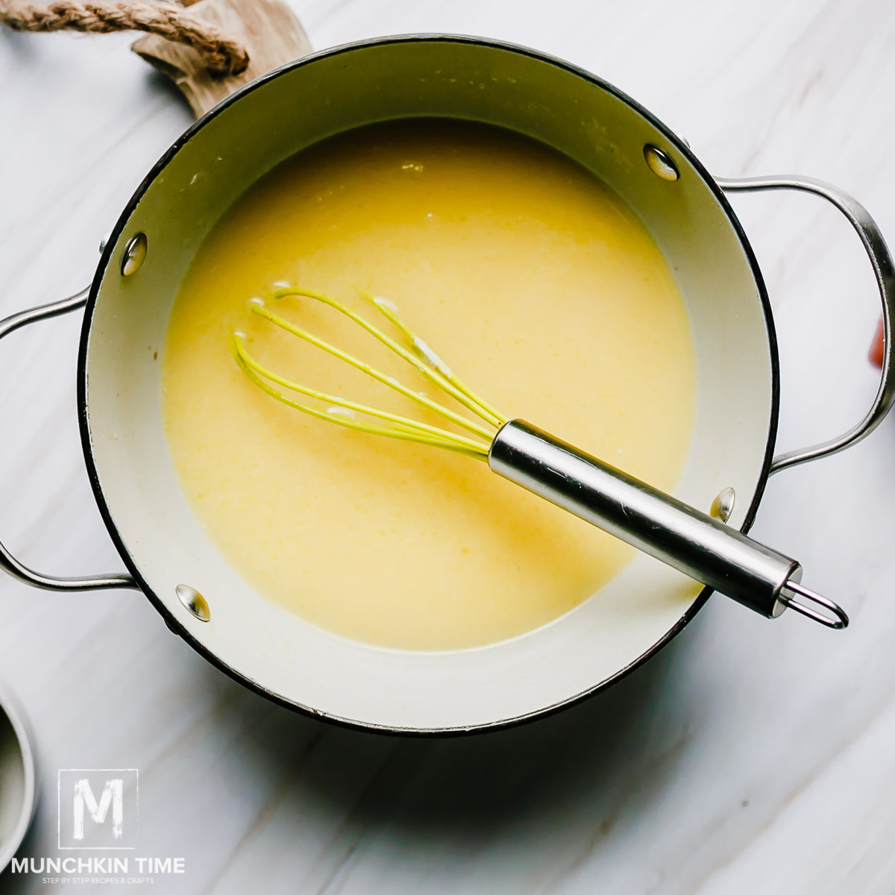

Secret sauce

Description
Absolutely delicious sauce that can be eaten with practically anything that is savory! Of course, it is also serves nicely as a dip for tortilla chips
Ingredients
- 2 cans of media crema
- Minced garlic
- Knorrs chicken seasoning
- Olive oil
- 2 buschles of cilantro
Directions
- Put sauce pan on low heat and add in olive oil
- Once the oil has heated up, add in minced garlic and allow it to simmer until fragrant
- While the garlic is in the pan, chop of the cilatro as finaly as you can
- Add the media crema into the pan
- Once you stirred the media crema and oil together, add in the cilantro and 1.5 spoonfuls of the chicken seasoning and stirr until uniform
- Once the cilatro has a limp texture add chicken seasoning to taste
- Once satisfied with taste, pour the sauce into the serving dish or storage container
- Enjoy!